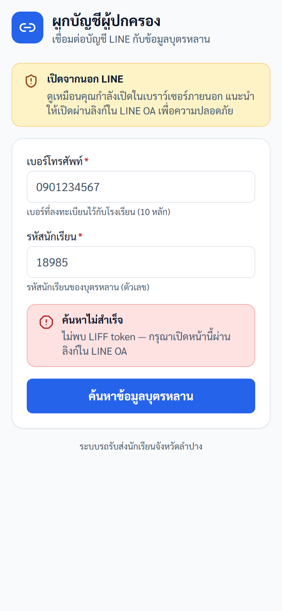
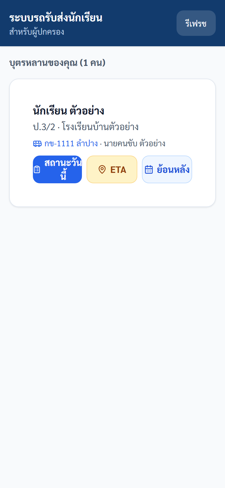
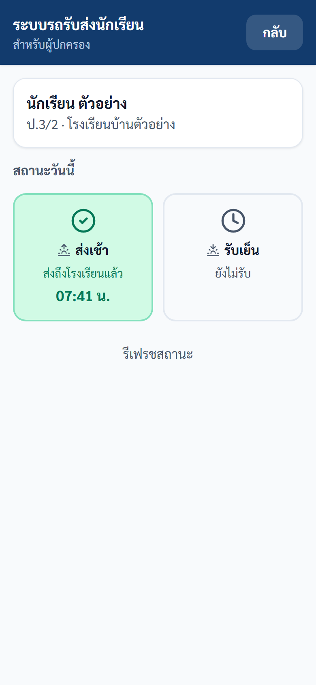
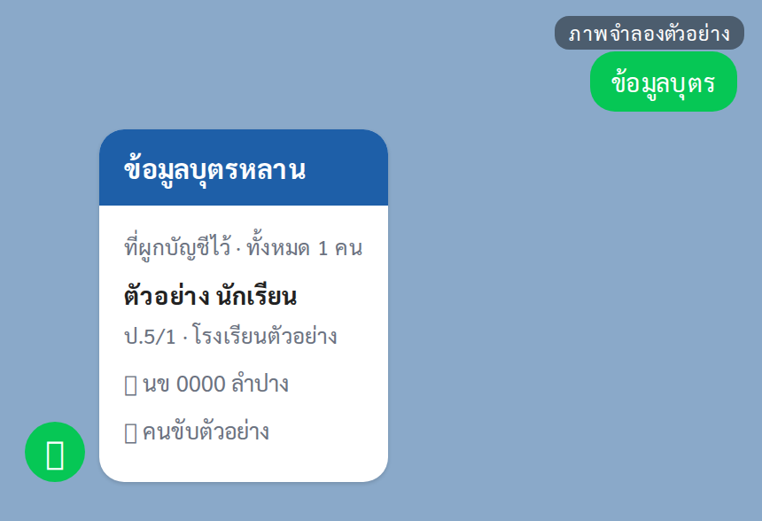
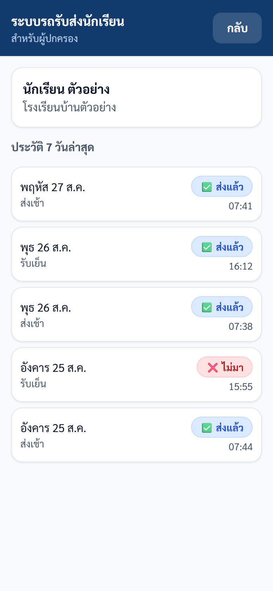
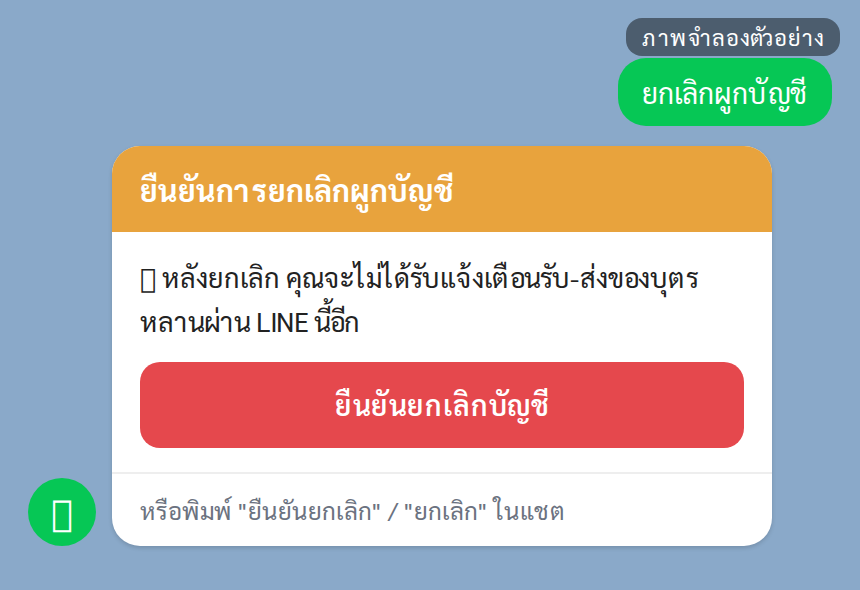
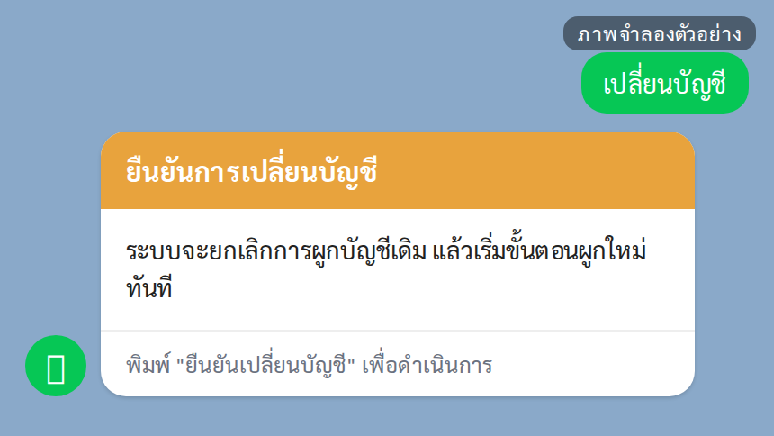
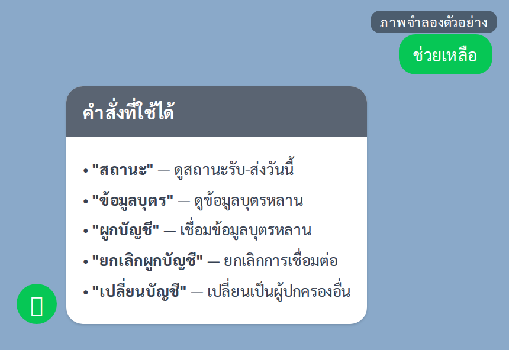
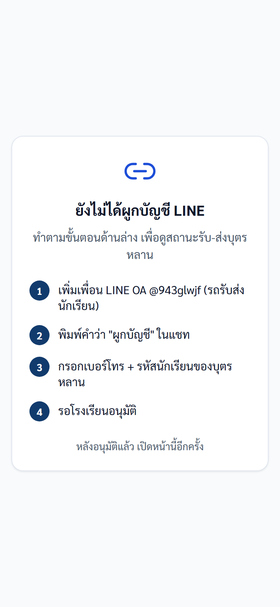

คู่มือผู้ปกครอง (ใช้ผ่าน LINE)
ℹ️ ระบบรถรับส่งนักเรียนจังหวัดลำปาง — schoolbuslampang.com · ปรับปรุง 24 ต.ค. 2569 · ภาพในคู่มือเป็นข้อมูลตัวอย่าง (ชื่อและเบอร์ถูกเบลอไว้)
คู่มือนี้สำหรับใคร และทำอะไรได้บ้าง
สำหรับผู้ปกครองนักเรียนที่ใช้รถรับส่ง ใช้งานผ่านแอป LINE บนมือถือ ไม่ต้องมีชื่อผู้ใช้หรือรหัสผ่าน
- ดูว่าวันนี้ลูกขึ้นรถ ถึงโรงเรียน หรือถึงจุดรับแล้วหรือยัง
- ดูข้อมูลลูก: ชั้น/ห้อง โรงเรียน ทะเบียนรถ และชื่อคนขับ
- ดูประวัติการรับ-ส่งย้อนหลัง 7 วัน
- รับข้อความทาง LINE เมื่อมีเหตุฉุกเฉิน
- ยกเลิกหรือเปลี่ยนบัญชี LINE ที่ผูกไว้
ℹ️ ระบบนี้ใช้ ดูข้อมูล อย่างเดียว ถ้าลูกจะไม่ขึ้นรถหรือลาเรียน ให้แจ้งครูหรือคนขับตามช่องทางเดิมของโรงเรียน (ระบบยังไม่มีเมนูแจ้งลาสำหรับผู้ปกครอง)
เริ่มต้นใช้งาน
1. เพิ่มเพื่อน LINE OA
💡 เพิ่มเพื่อน LINE OA ของระบบ: @943glwjf (ชื่อบัญชี "รถรับส่งนักเรียน") — กดลิงก์ https://line.me/R/ti/p/@943glwjf บนมือถือ หรือสแกน QR ด้านล่างด้วยแอป LINE แล้วปักหมุดแชตไว้ด้านบน เพื่อเข้าถึงได้รวดเร็ว
2. ผูกบัญชี (ทำครั้งเดียว)
ต้องผูกบัญชีก่อน จึงจะดูข้อมูลลูกได้ เตรียม 2 อย่าง:
- เบอร์โทร 10 หลัก ที่ให้ไว้กับโรงเรียน
- รหัสนักเรียน ของลูก (ถ้าไม่ทราบ ถามครูประจำชั้น)
- ในแชต LINE OA พิมพ์ ผูกบัญชี แล้วส่ง
- กดปุ่ม 📝 เปิดฟอร์มผูกบัญชี บนข้อความที่ระบบส่งมา
- หน้า ผูกบัญชีผู้ปกครอง จะเปิดขึ้น
- พิมพ์ เบอร์โทรศัพท์ 10 หลัก
- พิมพ์ รหัสนักเรียน
- กด ค้นหาข้อมูลบุตรหลาน
- ดูหน้า ตรวจสอบข้อมูล ว่าชื่อลูกและโรงเรียนถูกต้อง
- กด ยืนยันผูกบัญชี (ถ้าผิด กด ย้อนกลับ)

ภาพ: หน้าผูกบัญชีผู้ปกครอง (ภาพนี้ถ่ายนอกแอป LINE จึงมีแถบเตือนติดมา เมื่อเปิดจากแชต LINE จะไม่มี)
ทำเสร็จแล้วจะเห็นหน้า ผูกบัญชีสำเร็จ และมีข้อความ "ผูกบัญชีสำเร็จ" ในแชต
💡 อีกวิธี: ผูกในแชตเลย — พิมพ์ ผูกบัญชี แล้วพิมพ์เบอร์โทรและรหัสนักเรียนตอบในแชตตามที่ระบบถาม ใช้วิธีนี้ถ้ารหัสนักเรียนมีตัวอักษรปน (ฟอร์มรับเฉพาะตัวเลข) ถ้าทำค้างไว้นานเกินครึ่งชั่วโมง ให้พิมพ์ ผูกบัญชี เริ่มใหม่
⚠️ โรงเรียนต้อง อนุมัติ คุณเป็นผู้ปกครองก่อน ถ้ายังไม่อนุมัติ จะผูกไม่ได้หรือยังไม่เห็นข้อมูลลูก ให้ติดต่อโรงเรียน
งานประจำวัน (ทำตามลำดับ)
- อยากรู้ว่าลูกขึ้นรถ/ถึงแล้วหรือยัง → พิมพ์ สถานะ ในแชต
- อ่านสถานะรอบเช้าและรอบเย็น
- ถ้าลูกจะไม่ขึ้นรถ → แจ้งครูหรือคนขับตามช่องทางเดิมของโรงเรียน
ดูสถานะรับ-ส่งวันนี้ (ในแชต)
- เปิดแชต LINE OA
- พิมพ์ สถานะ แล้วส่ง
- อ่านข้อความ สถานะรับ-ส่งวันนี้ ที่ระบบตอบกลับ
ในข้อความจะมีชื่อลูก ชั้น/ห้อง โรงเรียน 🚌 ทะเบียนรถ 👤 ชื่อคนขับ และสถานะแต่ละรอบ:
| ถ้าเห็น | แปลว่า |
|---|---|
| ขึ้นรถแล้ว (รอบเช้า) | คนขับรับลูกขึ้นรถแล้ว |
| ถึงโรงเรียนแล้ว | ลูกถึงโรงเรียนแล้ว |
| ขึ้นรถกลับบ้านแล้ว | ลูกขึ้นรถออกจากโรงเรียนแล้ว แต่ยังอยู่ระหว่างทาง |
| ส่งถึงจุดรับแล้ว | คนขับส่งลูกถึงจุดรับ-ส่งแล้ว |
| ยังไม่ขึ้นรถ / ยังไม่ส่งถึงจุดรับ | ยังไม่มีการบันทึกในรอบนั้น |
ทำเสร็จแล้วจะเห็นสถานะล่าสุดพร้อมเวลา (คนขับหรือครูเป็นผู้บันทึก)
ℹ️ ระบบไม่ส่งข้อความทุกครั้งที่ลูกขึ้น-ลงรถ ส่งเฉพาะเหตุฉุกเฉิน ถ้าอยากรู้สถานะ ให้พิมพ์ สถานะ เอง ข้อมูลเป็นปัจจุบันทันทีที่มีการบันทึก
ดูสถานะในหน้าเว็บ (ถ้ามีลูกหลายคน)
ข้อความในแชตแสดงได้ไม่เกิน 3 คน หน้าเว็บในแอป LINE แสดงครบทุกคน
- เปิดหน้า ระบบรถรับส่งนักเรียน — สำหรับผู้ปกครอง จากลิงก์ในแชต LINE OA
- ดูรายการ บุตรหลานของคุณ
- กด สถานะวันนี้ ใต้ชื่อลูก
- ดูช่อง ส่งเช้า และ รับเย็น พร้อมเวลา
- อยากดูข้อมูลใหม่ กด รีเฟรชสถานะ
- กด กลับ (มุมขวาบน) เพื่อกลับไปรายชื่อลูก

ภาพ: รายการ "บุตรหลานของคุณ" ใต้ชื่อลูกมีปุ่ม "สถานะวันนี้" และ "ย้อนหลัง"

ภาพ: สถานะวันนี้ ช่องสีเขียวคือบันทึกแล้วพร้อมเวลา ช่องสีเทาคือยังไม่มีการบันทึก
ทำเสร็จแล้วจะเห็นสถานะรอบเช้า/เย็น ถ้ายังไม่มีการบันทึกเลย จะขึ้น "ยังไม่มีข้อมูลเช็คอินวันนี้"
งานอื่น ๆ (ทำเมื่อจำเป็น)
ดูข้อมูลลูก
- พิมพ์ ข้อมูลบุตร ในแชต
- อ่านข้อความ ข้อมูลบุตรหลาน

ภาพ: ตัวอย่างข้อความ "ข้อมูลบุตรหลาน" (ภาพจำลอง)
ทำเสร็จแล้วจะเห็นชั้น/ห้อง โรงเรียน ทะเบียนรถ และชื่อคนขับของลูกทุกคนที่โรงเรียนอนุมัติแล้ว
ดูประวัติย้อนหลัง 7 วัน
- เปิดหน้าเว็บสำหรับผู้ปกครองจากลิงก์ในแชต LINE OA
- กด ย้อนหลัง ใต้ชื่อลูก
- อ่านรายการ ประวัติ 7 วันล่าสุด

ภาพ: ประวัติ 7 วันล่าสุด (ชื่อในภาพเป็นข้อมูลตัวอย่าง)
ทำเสร็จแล้วจะเห็น 1 บรรทัดต่อ 1 รอบ: วันที่ · ส่งเช้า/รับเย็น · สถานะ (รับแล้ว / ส่งแล้ว / ไม่มา / ยกเลิก) · เวลา
ยกเลิกผูกบัญชี
ใช้เมื่อเลิกใช้ หรือเปลี่ยนเครื่อง หลังยกเลิกจะดูข้อมูลลูกไม่ได้
- พิมพ์ ยกเลิกผูกบัญชี ในแชต
- ตรวจชื่อลูกในข้อความที่ระบบส่งมา
- กด ยืนยันยกเลิกบัญชี (ถ้าเปลี่ยนใจ กด ไม่ยกเลิก)

ภาพ: ตัวอย่างข้อความยืนยันยกเลิกผูกบัญชี (ภาพจำลอง)
ทำเสร็จแล้วจะเห็นข้อความ "ยกเลิกผูกบัญชีสำเร็จ"
เปลี่ยนบัญชี (ใช้ LINE นี้กับเบอร์โทรอื่น)
- พิมพ์ เปลี่ยนบัญชี ในแชต
- อ่านข้อความยืนยัน
- พิมพ์ ยืนยันเปลี่ยนบัญชี
- ระบบจะถามเบอร์โทรใหม่ พิมพ์เบอร์โทร แล้วพิมพ์รหัสนักเรียนตามที่ระบบถาม

ภาพ: ตัวอย่างข้อความยืนยันเปลี่ยนบัญชี (ภาพจำลอง)
ทำเสร็จแล้วจะเห็นข้อความ "ผูกบัญชีสำเร็จ" ของบัญชีใหม่
คำที่พิมพ์ในแชตได้
พิมพ์ ช่วยเหลือ หรือ เมนู เพื่อดูรายการทั้งหมด
| พิมพ์ | ใช้ทำอะไร |
|---|---|
| สถานะ | ดูสถานะรับ-ส่งวันนี้ |
| ข้อมูลบุตร | ดูข้อมูลลูก รถ และคนขับ |
| ผูกบัญชี | เริ่มผูกบัญชี |
| ยกเลิกผูกบัญชี | เลิกผูกบัญชี LINE นี้ |
| เปลี่ยนบัญชี | ใช้ LINE นี้กับเบอร์โทรอื่น |
| ช่วยเหลือ | ดูเมนูคำสั่งทั้งหมด |
| ยกเลิก | หยุดขั้นตอนที่ทำค้างอยู่ |

ภาพ: ตัวอย่าง "เมนูใช้งาน LINE OA" (ภาพจำลอง) — คำสั่งที่เห็นจะต่างกันเล็กน้อย ตามว่าผูกบัญชีแล้วหรือยัง
ปัญหาที่พบบ่อย
| ถ้าเห็น/ถ้าเกิด | ให้ทำแบบนี้ |
|---|---|
| "ไม่พบข้อมูลที่ตรงกัน กรุณาตรวจสอบรหัสนักเรียนและเบอร์โทรศัพท์" | ตรวจเบอร์โทรและรหัสนักเรียนอีกครั้ง ถ้าถูกแล้วยังไม่ได้ ติดต่อโรงเรียนว่าอนุมัติคุณแล้วหรือยัง |
| ฟอร์มขึ้น "รหัสนักเรียนต้องเป็นตัวเลข" แต่รหัสลูกมีตัวอักษร | ผูกในแชตแทน: พิมพ์ ผูกบัญชี แล้วตอบตามที่ระบบถาม |
| "พยายามหลายครั้งเกินไป กรุณารอสักครู่แล้วลองใหม่อีกครั้ง" | กรอกผิดหลายครั้ง รอประมาณ 30 นาที ถามเบอร์และรหัสที่ถูกต้องจากโรงเรียนก่อน แล้วลองใหม่ |
| "มีการพยายามผูกบัญชีหลายครั้งเกินไป กรุณาลองใหม่ภายหลัง" | มีคนผูกบัญชีจากอินเทอร์เน็ตเดียวกันพร้อมกันหลายคน รอสักครู่แล้วลองใหม่ หรือผูกในแชตแทน |
| "บัญชี LINE นี้ผูกอยู่กับผู้ปกครองท่านอื่นแล้ว" | พิมพ์ ยกเลิกผูกบัญชี ก่อน แล้วผูกใหม่ |
| "เบอร์นี้ผูก LINE อื่นไว้แล้ว" | ยกเลิกที่ LINE เดิมก่อน หรือพิมพ์ เปลี่ยนบัญชี |
| หน้าเว็บขึ้น "ยังไม่ได้ผูกบัญชี LINE" ทั้งที่เคยผูกแล้ว | หน้าเว็บไม่ได้เปิดจากในแอป LINE ปิดหน้านั้น แล้วเปิดลิงก์จากแชต LINE OA ใหม่ |
| หน้าเว็บขึ้น "เปิดจากนอก LINE" หรือ "ไม่พบ LIFF token" | เหมือนข้อบน — เปิดจากแชต LINE OA ในมือถือเท่านั้น |
| หน้าเว็บขึ้น "ไม่พบข้อมูลบุตรหลาน" | โรงเรียนยังไม่อนุมัติ รอโรงเรียนอนุมัติ แล้วกด รีเฟรชข้อมูล |
| ไม่ได้รับข้อความตอนลูกขึ้น-ลงรถ | เป็นปกติ ระบบส่งเฉพาะเหตุฉุกเฉิน พิมพ์ สถานะ เพื่อดูเอง |
| ข้อความในแชตขึ้น "แสดง 3 จาก ... คน" | เปิดหน้าเว็บสำหรับผู้ปกครอง จะเห็นลูกครบทุกคน |
| กดปุ่ม ETA ในหน้าเว็บแล้วไม่มีข้อมูล (ขึ้น "—") | เป็นปกติ ส่วนนี้ยังไม่เปิดใช้ ให้กด สถานะวันนี้ แทน |
| สถานะผิด หรือข้อมูลลูก/รถไม่ถูกต้อง | ติดต่อโรงเรียน (ผู้ปกครองแก้ข้อมูลเองไม่ได้) |

ภาพ: หน้าที่ขึ้นเมื่อยังไม่ได้ผูกบัญชี หรือไม่ได้เปิดจากแชต LINE OA
ติดต่อใครเมื่อมีปัญหา
- ผูกบัญชีไม่ได้ / ยังไม่ได้รับอนุมัติ / ไม่ทราบรหัสนักเรียน → ครูประจำชั้นหรือเจ้าหน้าที่โรงเรียน
- สถานะหรือข้อมูลลูก รถ คนขับ ไม่ถูกต้อง → โรงเรียน
- ลูกจะไม่ขึ้นรถ / ลาเรียน → ครูหรือคนขับ ตามช่องทางเดิมของโรงเรียน
สิ่งที่ต้องบอกเมื่อแจ้งปัญหา:
- ชื่อ-นามสกุลลูก และโรงเรียน
- เบอร์โทรที่ใช้ผูกบัญชี
- ข้อความที่ขึ้นบนจอ (ถ่ายภาพหน้าจอไว้)
- วันและเวลาที่เกิดปัญหา
ข้อควรระวังเรื่องข้อมูลนักเรียน
- คุณเห็นได้เฉพาะลูกของคุณที่โรงเรียนอนุมัติแล้วเท่านั้น
- อย่าบอกรหัสนักเรียนและเบอร์โทรที่ใช้ผูกบัญชีให้คนอื่น
- อย่าส่งต่อภาพหน้าจอที่มีชื่อลูก ทะเบียนรถ หรือชื่อคนขับ ไปในกลุ่มสาธารณะ
- ถ้าเปลี่ยนมือถือหรือเลิกใช้ ให้พิมพ์ ยกเลิกผูกบัญชี